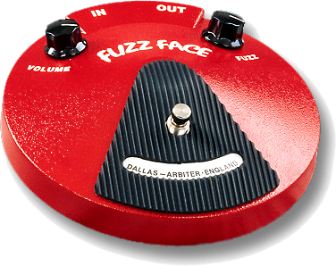

Fuzz
David's Fuzz:
Fuzz Face - (BC109 silicon)

Vol: 2-3:00
|
Fuzz: 5:00
The Dallas Arbiter Fuzz Face® was the fuzz of choice for David Gilmour in the late 60s and early 70s. By the time Dark Side of the Moon was recorded in 1972, David was using a silicon transistor model of the fuzz unit.
GilmourGuru's Fuzz:
Analogman BC109 - Time Clock Sun Face

Vol: 2-2:30
|
Fuzz: 5:00
The Analogman BC109 Floyd Custom Fuzz is handmade in the USA, and is using the same silicon transistors found in David's 1971 - 1975 Fuzz units used on DSOTM as well as the supporting tours.